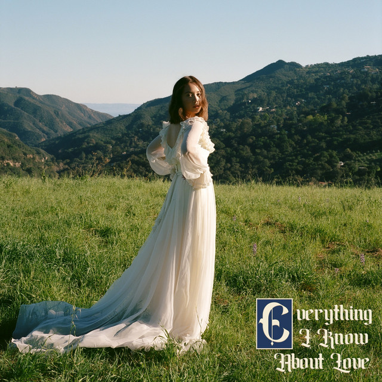

Laufey
Laufey

- is an Icelandic singer-songwriter. She became popular in the early 2020s.
- Laufey describes her musical style, a mixture of jazz pop and bedroom pop, as 'modern jazz.
- She currently resides in Los Angeles, Laufey (pronounced "lay-vay") spent most of her childhood between Reykjavík, Iceland and Washington, D.C. With her father being Icelandic and her mother being Chinese, Laufey also visited Beijing, China once a year.
- Laufey participated in The Voice Iceland in 2015. She released her debut EP Typical of Me in 2021, before releasing her debut album Everything I Know About Love in 2022.
back.